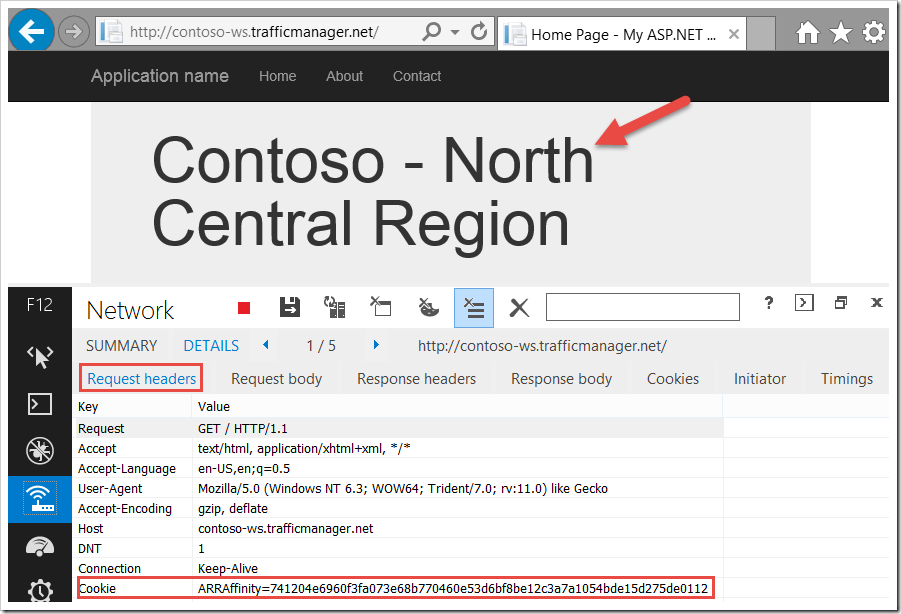
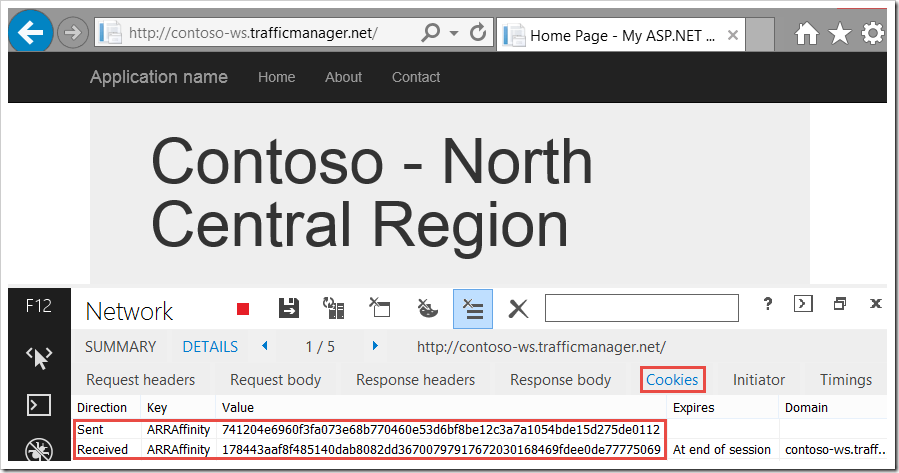
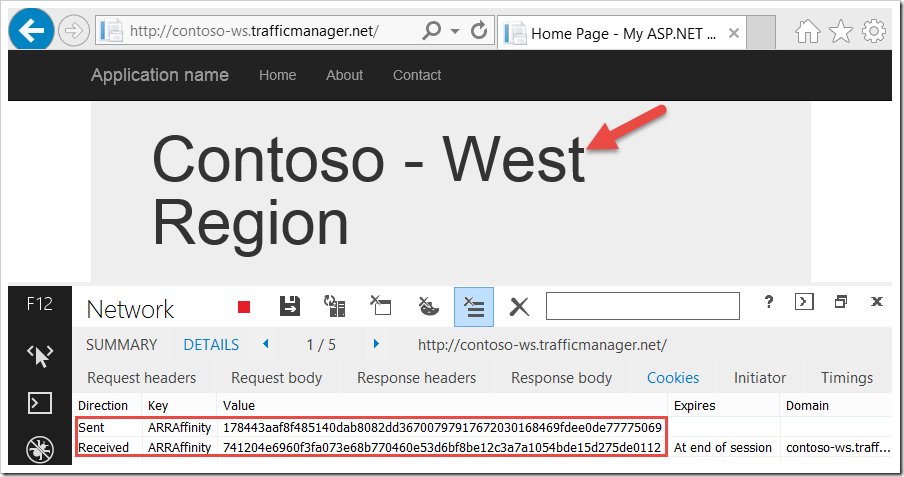
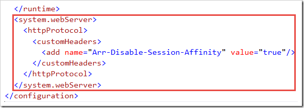

In my previous post I talked about using Windows Azure Web Sites and Traffic Manager together to achieve load balancing across web site deployments in different regions. Having Traffic Manager support for Windows Azure Web Sites is a great addition to the Windows Azure platform that was recently announced by Microsoft.
In this post, I’m going to dig into this a little deeper and share some observations and recommendations when using Traffic Manager with Windows Azure Web Sites.
ARR Affinity and Web Sites
Windows Azure Web Sites, by default, use an ARRAffinity cookie to insure subsequent requests from a user are routed back to the web site instance that the user initially connected to. In other words, Windows Azure Web Sites assumes your web site is not stateless. If you were to scale your web site deployment to multiple instances, the ARR Server processes this ARR Affinity cookie and sends you back to the instance that processed your initial request (the request that originated the cookie).
If you’re not already familiar with this, check out this blog for an in-depth discussion on ARR Affinity for Web Sites and how to disable ARR Affinity if your web site is stateless.
ARR Affinity and Traffic Manager
Now, assuming the default ARR Affinity behavior for web sites, let’s look at this in a scenario where Traffic Manager is providing ##Round Robin Load Balancing## across web site deployments in multiple regions. For this post, I’m continuing with the 3 web site deployments from my previous post, which are in the West, North Central, and East regions.
You can see this ARRAffinity cookie using the developer tools feature (press F12) in Internet Explorer. Below is a new browser session where I browsed to contoso-ws-trafficmanager.net and as part of the response, I got an ARRAffinty cookie back.

Now, in subsequent requests, this cookie is provided in the request headers so ARR can properly route the request back to the instance (not region) that serviced the first request.

Assuming my DNS entries on my client don’t change, I’ll get back to the West region on a subsequent request and the ARR Server will use this cookie to make sure I get back to the right instance in that region.
Now, when you add Traffic Manager (Round Robin or Performance) for your web site deployments, there is a risk that you will not get back to the same instance because Traffic Manager may resolve you to a different region entirely.
To demonstrate, notice above that my ARR Affinity cookie (…0112) was issued in my initial request which was serviced by the West deployment. In that same browser session, after some time had passed, I refreshed my browser. As expected, the cookie is passed in the request headers. But, this time my request resolved to the North deployment.

Clearly this can be problematic if my web site is not stateless, which as I said at the beginning, is an assumption made for Windows Azure Web Sites and the reason for the ARR Affinity cookie.
Now, looking at the cookies for this last request I can see that the instance in my North deployment issued a new ARRAffinity cookie (…5069).

It did this because it does not have a mapping for the first cookie (…0012) to an instance of my web site in the North. The ARR server in the West knows about this cookie, but not the one in the North. So, a new cookie was issued.
Waiting again for a few minutes, I just happened to get routed back to the West deployment. On this request, the 2nd cookie (…5069) that I got from the North was sent in the request. Of course, the instance in the West didn’t recognize it as valid so it issued a new cookie, which happens to be the first cookie (…0112) because I only have the one instance in that region.

So, I have two deployments, West and North, servicing one user. If my web site is not stateless this has the potential of creating some big problems for me.
Traffic Manager and Web Sites with state/session
If your web site is not stateless, then your use of Traffic Manager should be limited to the Failover load balancing method. Otherwise, you risk having session data for a single user in multiple regions as I’ve demonstrated above.
Traffic Manager and stateless Web Sites
If your web site is indeed stateless, then you don’t have any risk other than your load balancing at each region not being as optimal as it could be. So, disabling ARR Affinity for stateless web sites is a good idea and this blog shows a couple of ways this can be done. For my sample here, I chose this approach.

Hopefully this helps you get the most out of using Traffic Manager with Microsoft Azure Web Sites.
Comments powered by Disqus.